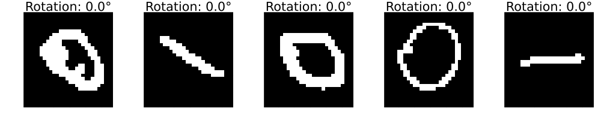

This example was automatically generated from a Jupyter notebook in the RxInferExamples.jl repository.
We welcome and encourage contributions! You can help by:
- Improving this example
- Creating new examples
- Reporting issues or bugs
- Suggesting enhancements
Visit our GitHub repository to get started. Together we can make RxInfer.jl even better! üí™
Learning Dynamics with VAEs
Bayesian inference often struggles in high-dimensional spaces (not with RxInfer.jl, it actually happens rarely) - a challenge known as the "curse of dimensionality."
The curse of dimensionality refers to various phenomena that arise when analyzing data in high-dimensional spaces that do not occur in low-dimensional settings. In Bayesian inference context, the curse of dimensionality refers to the exponential increase in computational difficulty and statistical challenges as the number of parameters (dimensions) in a model increases.
There are several approaches to tackle this problem, among them:
- Hierarchical models - Breaking down complex problems into nested, simpler components
- "Compromise" approaches - Being "partially Bayesian" by combining Bayesian and non-fully Bayesian methods
In this notebook, we explore the compromise approach. We'll use a Variational Autoencoder (VAE) to learn a low-dimensional latent representation of MNIST digits, and then perform Bayesian inference on the dynamics of rotating digits in this latent space.
Variational Autoencoder (VAE): A type of neural network architecture that learns to encode data into a compressed latent representation and then decode it back to the original form. Unlike traditional autoencoders, VAEs encode data as probability distributions rather than fixed points, making them generative models capable of creating new data samples.
Latent representation: A compressed, lower-dimensional encoding of data that captures its essential features. Think of it as finding the most important aspects of complex data while discarding noise and redundancy.
MNIST digits: A standard dataset in machine learning consisting of 28×28 pixel grayscale images of handwritten digits (0-9), commonly used for training image processing systems.
Note: This is a simple example with simplified data that serves as a template for more interesting applications.
Throughout this demonstration we will use CPU for computation; however, the model is fully GPU compatible. See AutoEncoderToolkit.jl for more details.
This demonstrates how we can leverage the strengths of both worlds:
- VAEs for efficient dimensionality reduction (non-fully Bayesian)
- Bayesian inference for modeling dynamics in the reduced space
Dimensionality reduction: The process of reducing the number of variables under consideration by obtaining a set of principal variables that still preserves the essential information in the data.
Dynamics: In this context, refers to how the latent representations change over time or with certain transformations (like rotation of digits).
import AutoEncoderToolkit
import Flux
using MLDatasets: MNIST
import JLD2
using Plots
using Statistics
using RxInfer, ReactiveMP, LinearAlgebraPart 1: Creating a Dataset of Rotating Digits
First, we need data to work with. Instead of using static MNIST digits, we'll create a dataset of rotating digits. This will give us a clear transformation to model in the latent space.
We'll select a few examples of digits 0 and 1, then generate multiple rotated versions of each. This will create a dataset where we know exactly how the images are related to each other through the rotation transformation.
"""
generate_rotated_sequence(image, n_frames=36, max_angle=360)
Generate a sequence of rotated versions of an input image.
Returns the sequence of rotated images.
"""
function generate_rotated_sequence(image, n_frames=36, max_angle=360)
img_2d = image[:, :, 1, 1]
# Get image dimensions
height, width = size(img_2d)
# Create array to store rotated images
rotated_images = []
for i in 1:n_frames
# Calculate rotation angle for this frame
angle = (i-1) * max_angle / n_frames
# Create rotation matrix
rotation = [cosd(angle) -sind(angle); sind(angle) cosd(angle)]
# Create empty image for the rotated result
rotated = zeros(Float32, height, width)
# Center of the image
center_y, center_x = (height+1)/2, (width+1)/2
# Apply rotation to each pixel
for y in 1:height, x in 1:width
# Convert to coordinates relative to center
y_centered = y - center_y
x_centered = x - center_x
# Apply rotation
new_coords = rotation * [x_centered, y_centered]
# Convert back to image coordinates
new_x = round(Int, new_coords[1] + center_x)
new_y = round(Int, new_coords[2] + center_y)
# Check if the new coordinates are within bounds
if 1 <= new_x <= width && 1 <= new_y <= height
rotated[y, x] = img_2d[new_y, new_x]
end
end
# Store the rotated image
push!(rotated_images, rotated)
end
return rotated_images
endMain.var"##WeaveSandBox#277".generate_rotated_sequenceIn order to download datasets without having to manually confirm the download, we can set to true the DATADEPS_ALWAYS_ACCEPT environmental variable. Read more about MLDatasets.jl here.
ENV["DATADEPS_ALWAYS_ACCEPT"] = truetrue"""
create_rotated_mnist_dataset(n_samples_per_digit=10, n_rotations=36)
Create a dataset of rotated MNIST digits (0s and 1s).
Returns the dataset and labels.
"""
function create_rotated_mnist_dataset(n_samples_per_digit=10, n_rotations=36)
# Load MNIST data
train_dataset = MNIST(split=:train)
# Find indices of 0s and 1s
indices_0 = findall(x -> x == 0, train_dataset.targets)
indices_1 = findall(x -> x == 1, train_dataset.targets)
# Select a subset of each digit
selected_indices_0 = indices_0[1:n_samples_per_digit]
selected_indices_1 = indices_1[1:n_samples_per_digit]
# Combine indices
selected_indices = vcat(selected_indices_0, selected_indices_1)
# Create arrays to store rotated images and labels
rotated_images = []
rotated_labels = []
# For each selected digit
for (i, idx) in enumerate(selected_indices)
# Get the original image
original = Float32.(reshape(train_dataset.features[:, :, idx], 28, 28))
# Get the label
label = train_dataset.targets[idx]
# Generate rotated versions
rotations = generate_rotated_sequence(original, n_rotations)
# Add to dataset
for rotated in rotations
push!(rotated_images, rotated)
push!(rotated_labels, label)
end
end
# Convert to arrays
X = zeros(Float32, 28, 28, 1, length(rotated_images))
for i in 1:length(rotated_images)
X[:, :, 1, i] = rotated_images[i]
end
y = rotated_labels
# we will use a binarized version of the MNIST datase
threshold = 0.5 * maximum(X)
X = Float32.(X .> threshold)
return X, y
endMain.var"##WeaveSandBox#277".create_rotated_mnist_dataset# Create rotated MNIST dataset
println("Creating rotated MNIST dataset...")
n_samples_per_digit = 10 # Number of original digits to use
n_rotations = 36 # Number of rotations per digit
rotated_train_data, rotated_train_labels = create_rotated_mnist_dataset(n_samples_per_digit, n_rotations)
println("Rotated dataset created with $(size(rotated_train_data, 4)) images")
# Create an animation of sample rotated digits
sample_indices = rand(1:n_samples_per_digit*2, 5) # 5 random digits from our dataset
sample_animation = @animate for angle_idx in 1:n_rotations
# Create a plot with 5 random digits at the same rotation angle
p = plot(layout=(1, 5), size=(1000, 200))
for (i, digit_idx) in enumerate(sample_indices)
# Calculate the index in the full dataset
idx = (digit_idx-1) * n_rotations + angle_idx
# Use binary colors (white background, black digits)
heatmap!(p, rotated_train_data[:, :, 1, idx],
color=[:black, :white],
colorbar=false,
title="Digit: $(rotated_train_labels[idx])",
subplot=i, axis=false)
end
plot!(p, title="Rotation: $(round((angle_idx-1)*360/n_rotations, digits=1))°")
end
# Save as GIF with 10 frames per second
gif(sample_animation, "rotated_digits_samples.gif", fps=10, show_msg=false);Creating rotated MNIST dataset...
Rotated dataset created with 720 images
Part 2: Building the VAE Model
Now we'll define our Variational Autoencoder. The VAE will learn to compress the high-dimensional image data (28×28 = 784 dimensions) into a much lower-dimensional latent space (just 2 dimensions in this example).
Variational Autoencoder (VAE) architecture: A VAE consists of two main components:
- An encoder network that compresses input data into a probability distribution in latent space
- A decoder network that reconstructs the original data from samples in the latent space
Unlike traditional autoencoders, VAEs don't encode to exact points but to probability distributions, making them generative models.
Latent space regularization: VAEs use a special loss function that includes both reconstruction error and a regularization term (KL divergence) that encourages the latent space to be well-structured and continuous, making it suitable for interpolation and generation.
This is the "non-Bayesian" part of our approach - we're using a neural network for dimensionality reduction rather than a fully Bayesian model, which can be computationally intractable for high-dimensional image data.
Computational intractability: A fully Bayesian approach would require modeling the joint probability distribution of all 784 pixels, which would involve an enormous number of parameters and complex dependencies. This becomes computationally prohibitive as the dimensionality increases - a manifestation of the "curse of dimensionality" mentioned earlier.
"""
create_vae(n_latent=2, n_channels_init=32)
Create a VAE model with convolutional encoder and decoder.
Returns the VAE model with a 2D latent space by default.
"""
function create_vae(n_latent=2, n_channels_init=32)
# Define convolutional layers for encoder
conv_layers = Flux.Chain(
Flux.Conv((4, 4), 1 => n_channels_init, Flux.relu; stride=2, pad=1),
Flux.Conv((4, 4), n_channels_init => n_channels_init * 2, Flux.relu; stride=2, pad=1),
AutoEncoderToolkit.Flatten(),
Flux.Dense(n_channels_init * 2 * 7 * 7 => 256, Flux.relu),
Flux.Dense(256 => 256, Flux.relu),
)
# Define layers for μ and log(σ)
μ_layer = Flux.Dense(256, n_latent, Flux.identity)
logσ_layer = Flux.Dense(256, n_latent, Flux.identity, bias=fill(-1.0f0, n_latent))
# Build encoder
encoder = AutoEncoderToolkit.JointGaussianLogEncoder(conv_layers, μ_layer, logσ_layer)
# Define deconvolutional layers for decoder
deconv_layers = Flux.Chain(
Flux.Dense(n_latent => 256, Flux.identity),
Flux.Dense(256 => 256, Flux.relu),
Flux.Dense(256 => n_channels_init * 2 * 7 * 7, Flux.relu),
AutoEncoderToolkit.Reshape(7, 7, n_channels_init * 2, :),
Flux.ConvTranspose((4, 4), n_channels_init * 2 => n_channels_init, Flux.relu; stride=2, pad=1),
Flux.ConvTranspose((4, 4), n_channels_init => 1, x -> Flux.sigmoid_fast(x * 5.0); stride=2, pad=1),
)
# Define decoder - use BernoulliDecoder for binarized data
decoder = AutoEncoderToolkit.BernoulliDecoder(deconv_layers)
# Define VAE model
vae = encoder * decoder |> Flux.cpu
return vae
end;Part 3: Training the VAE
Now we'll train the VAE on our rotated digit dataset. The VAE learns to:
- Encode images into a 2D latent space (encoder)
- Decode points from the latent space back to images (decoder)
The training process and function implementation used here are adapted from the AutoEncoderToolkit.jl documentation, which provides comprehensive examples for implementing various autoencoder architectures in Julia.
"""
train_vae(vae, train_data; n_epoch=50, batch_size=64, learning_rate=1e-3)
Train a VAE model on the provided data.
Returns the trained model and training metrics.
"""
function train_vae(vae, train_data; n_epoch=50, batch_size=64, learning_rate=1e-3)
# Create data loader
train_loader = Flux.DataLoader(train_data, batchsize=batch_size, shuffle=true)
# Setup optimizer
opt_vae = Flux.Train.setup(Flux.Optimisers.Adam(learning_rate), vae)
# Initialize arrays to save metrics
train_losses = Array{Float32}(undef, n_epoch)
# Loop through epochs
for epoch in 1:n_epoch
batch_losses = Float32[]
# Calculate β value with annealing scheme
β_value = epoch <= 15 ? 0.1f0 + (epoch - 1) / 15 * 0.9f0 : 1.0f0
# Loop through batches
for (i, x) in enumerate(train_loader)
# Train VAE with current β value (doesn't return a value)
AutoEncoderToolkit.VAEs.train!(vae, x, opt_vae; loss_kwargs=(β=β_value,))
# Calculate loss separately
batch_loss = AutoEncoderToolkit.VAEs.loss(vae, x; β=β_value)
push!(batch_losses, batch_loss)
# Print progress for every 10 batches
if i % 10 == 0
println("Epoch: $epoch/$n_epoch | Batch: $i/$(length(train_loader)) | Loss: $(round(mean(batch_losses), digits=4))")
end
end
# Record average loss for epoch
train_losses[epoch] = mean(batch_losses)
# Print epoch summary
println("Epoch $epoch/$n_epoch completed | Avg Loss: $(round(train_losses[epoch], digits=4))")
end
return vae, train_losses
endMain.var"##WeaveSandBox#277".train_vae# # Create and train the VAE model on the rotated dataset
# # We will skip the training step within the notebook and will load the pre-trained model instead, feel free to uncomment the following lines to train the model yourself.
# println("Creating VAE model...")
# vae = create_vae()
# println("Training VAE on rotated MNIST dataset...")
# vae, losses = train_vae(vae, rotated_train_data, n_epoch=100)
# # Save the trained model parameters
# model_params = Dict()
# for (i, p) in enumerate(Flux.params(vae))
# model_params["param_$i"] = Flux.cpu(p) # Move to CPU before saving
# end
# # Save the parameters dictionary
# JLD2.save("rotated_mnist_vae_params.jld2", model_params)
# println("Model parameters saved to: rotated_mnist_vae_params.jld2")
# # Plot training loss
# loss_plot = plot(losses, title="VAE Training Loss (Rotated MNIST)", xlabel="Epoch", ylabel="Loss",
# legend=false, linewidth=2, color=:blue)# Create an empty VAE with the same architecture as the one you saved
function load_vae(filepath; n_latent=2, n_channels_init=32)
# Create a new VAE with the same architecture
vae = create_vae(n_latent, n_channels_init)
# Load the saved parameters
model_params = JLD2.load(filepath)
# Get the parameters of the current model
ps = Flux.params(vae)
# Replace the parameters with the loaded ones
for (i, p) in enumerate(ps)
param_key = "param_$i"
if haskey(model_params, param_key)
# Copy values from saved parameters to the model
copyto!(p, model_params[param_key])
else
@warn "Parameter $param_key not found in saved model"
end
end
return vae
end
vae = load_vae("rotated_mnist_vae_params.jld2");# Display original and reconstructed images
img = rotated_train_data[:, :, :, 42]
p1 = heatmap(img[:, :, 1, 1] |> Flux.cpu, color=[:black, :white], colorbar=false, title="Original Image")
# Reshape to add channel dimension (H×W → H×W×C) for network input
encoded_img = vae.encoder(reshape(img, size(img)..., 1))
# p represents pixel-wise probabilities (Bernoulli parameters) since we're using binarized images
decoded_img = vae.decoder(encoded_img.μ)
p2 = heatmap(decoded_img.p[:, :, 1, 1], color=:grays, title="Reconstructed Image")
display(plot(p1, p2, layout=(1, 2), size=(800, 400)))
Part 4: Integrating VAE with RxInfer for Bayesian Inference
Now we'll explore the Bayesian component of our approach. Using RxInfer, we'll perform probabilistic inference on the latent space dynamics of rotating digits, enabling us to simultaneously model the underlying rotation process and generate predictions of future images.
First, we need to create a custom node that connects our VAE to the RxInfer framework. This is really simple, we just need to define a node and a couple of rules.
We will create a VAENode with input and output interfaces. Nodes in RxInfer require messages to be passed between them during inference. In this case, we have the luxury of not needing to solve any tough integrals:
- We'll use the encoder as our message passing function toward the input interface (from images to latent space)
- The forward message for the output interface will be our decoder (from latent space to images)
# Create a VAE wrapper to help with RxInfer integration
struct VAENode end
# Meta struct to store the VAE model for use in message passing rules
struct VAEMeta{F}
vae::F
end
# Define a custom VAE node for RxInfer
@node VAENode Stochastic [out, x]
# Define the backward message passing rule (z ← out)
@rule VAENode(:x, Marginalisation) (q_out::PointMass, meta::VAEMeta) = begin
# Get the value from the output message
x_val = mean(q_out)
# Pass through encoder to get latent distribution
# Need to reshape x_val to match expected input shape
x_reshaped = reshape(x_val, 28, 28, 1, 1)
encoded = meta.vae.encoder(x_reshaped)
z_mean = vec(encoded.μ) |> Flux.cpu
z_var = exp.(vec(encoded.logσ)) .^ 2 |> Flux.cpu
# Return multivariate normal distribution
return MvNormalMeanCovariance(z_mean, Diagonal(z_var))
end
@rule VAENode(:out, Marginalisation) (q_x::MultivariateNormalDistributionsFamily, meta::VAEMeta) = begin
# from the latent distribution, sample a value
z_val = mean(q_x)
# Convert to Float32 to match the decoder's parameter type
z_val = Float32.(z_val)
# pass through decoder to get image distribution
decoder_output = meta.vae.decoder(z_val)
# return the image distribution
return decoder_output.p
end
# DONE!Now we'll define a state space model to capture the dynamics of rotation in the latent space. This model assumes:
- The latent state evolves according to a linear dynamical system with unknown transition matrix and noise
- The observed images are generated from the latent states through the VAE
# Define the state space model using the VAE node
@model function ssm_vae(y)
Λₛ ~ Wishart(4, diageye(2)) # Precision matrix for the transition matrix
Hₛ ~ MvNormal(μ = zeros(4), Λ = diageye(4)) # Vectorized 2×2 transition matrix prior
# Initial state
x[1] ~ MvNormal(μ = zeros(2), Σ = diageye(2))
y[1] ~ VAENode(x[1])
# State space model evolution
for t in 2:length(y)
x[t] ~ ContinuousTransition(x[t-1], Hₛ, Λₛ) # equivalent to x[t] := Hₛ * x[t-1] + ϵ[t]
y[t] ~ VAENode(x[t])
end
endAfter specifying our model, we need to set up several components that will guide the inference process:
Constraints: We'll specify factorization constraints on the approximate posterior distribution, assuming independence between variables transition matrix and precision matrix,
q(x, Hₛ, Λₛ) = q(x)q(Hₛ)q(Λₛ).Transition function: This reshapes our vector representation of the transition matrix into the
2×2matrix form needed for the state equation.Metadata: We provide RxInfer with information about our custom VAE node and continuous transition function.
Initial marginals: Starting distributions for our unknown parameters (transition matrix and precision matrix).
These components define how our inference algorithm will learn the dynamics of rotation in the latent space.
# Define constraints for inference
constraints = @constraints begin
q(x, Hₛ, Λₛ) = q(x)q(Hₛ)q(Λₛ)
end
# Define transition function
transition(h) = reshape(h, (2, 2))
# Define metadata for inference
meta = @meta begin
ContinuousTransition() -> CTMeta(transition)
VAENode() -> VAEMeta(vae)
end
# Define initial marginals
initmarginals = @initialization begin
q(Hₛ) = MvNormalMeanCovariance(zeros(4), 1e2diagm(ones(4)))
q(Λₛ) = Wishart(4, diageye(2))
end
# Create model
ssm_vae_model = ssm_vae();Let's generate a sequence of rotated images to use for inference.
# Select a sample image from the dataset (e.g., the first digit 1)
println("Generating rotated image sequence...")
digit_indices = findall(rotated_train_labels .== 1)
sample_image = rotated_train_data[:, :, :, digit_indices[1]]
# Generate and display the rotation sequence
rotation_anim = generate_rotated_sequence(sample_image, 100, 360)
# Create an animation of the rotating sequence used for learning dynamics
println("Creating rotation animation for learning dynamics...")
rotation_animation = @animate for i in 1:length(rotation_anim)
heatmap(rotation_anim[i], color=[:black, :white], colorbar=false,
title="Observed Rotations $(round((i-1)*360/length(rotation_anim), digits=1))°",
axis=false, aspect_ratio=:equal, size=(400, 400))
end
# Save as GIF with 10 frames per second
gif(rotation_animation, "rotation_learning_animation.gif", fps=10, show_msg=false);Generating rotated image sequence...
Creating rotation animation for learning dynamics...Now, we are going to do something cool here. We will not only pass 100 images to our model to infer the dynamics, but we will also have RxInfer predict the next 100 images. This means we'll simultaneously learn the dynamics and generate predictions for future images.
# Prepare rotated sequence for inference
# Convert the rotated images to the format expected by the VAE node
rotated_data = []
for img in rotation_anim
img_4d = reshape(img, size(img)..., 1, 1)
push!(rotated_data, img_4d)
end
n_obs = length(rotated_data);
n_pred = 100;
# Create data structure for inference
data = (y = [rotated_data; repeat([missing], n_pred)],);println("Running inference...")
result = infer(
model = ssm_vae_model,
meta = meta,
initialization = initmarginals,
data = data,
constraints = constraints,
iterations = 50,
showprogress = true,
free_energy = false,
free_energy_diagnostics = nothing,
options = (limit_stack_depth = 100,)
)Running inference...
Inference results:
Posteriors | available for (x, Λₛ, Hₛ)
Predictions | available for (y)# Create an animation that distinguishes between observations and predictions
y_pred = result.predictions[:y][end];
println("Creating observation-prediction animation...")
continuation_animation = @animate for i in 1:length(y_pred)
if i == 1
# First frame gets a more descriptive title
heatmap(y_pred[i][:, :, 1, 1], color=:grays,
title="Rotating Digit: $n_obs observations → $n_pred predictions",
axis=false, aspect_ratio=:equal, size=(400, 400))
elseif i <= n_obs
# Rest of observations
heatmap(y_pred[i][:, :, 1, 1], color=:grays,
title="Observation #$i of $n_obs",
axis=false, colorbar=false, aspect_ratio=:equal, size=(400, 400))
else
# Predictions - with red title text
heatmap(y_pred[i][:, :, 1, 1], color=:inferno,
title=("Prediction #$(i-n_obs) of $n_pred ahead"),
title_location=:center, titlefontcolor=:red,
axis=false, aspect_ratio=:equal, size=(400, 400),
border=:red, colorbar=false, borderwidth=3)
end
end
# Save as GIF with 10 frames per second
gif(continuation_animation, "observation_prediction_animation.gif", fps=24, show_msg=false);Creating observation-prediction animation...Let's visualize the observations and predictions side by side.
function create_digit_strips_with_titles(y_pred, n_obs=100, n_pred_to_show=50)
# Get image dimensions
img_height, img_width = size(y_pred[1][:,:,1,1])
# Create a single large image for observations (top row)
obs_strip = zeros(img_height, img_width * n_obs)
for i in 1:n_obs
obs_strip[:, ((i-1)*img_width+1):(i*img_width)] = y_pred[i][:,:,1,1]
end
# For predictions, use the first 50 predictions (101-150)
pred_indices = (n_obs+1):(n_obs+n_pred_to_show)
# Create a single large image for predictions (bottom row)
# Make each prediction twice as wide to fill the same space
pred_strip = zeros(img_height, img_width * n_pred_to_show * 2)
for i in 1:n_pred_to_show
# Fill a 2x wider space for each prediction
start_col = ((i-1)*img_width*2+1)
end_col = (i*img_width*2)
# Repeat each column to double the width
for j in 1:img_width
pred_strip[:, start_col+2*(j-1):start_col+2*(j-1)+1] .= y_pred[pred_indices[i]][:, j, 1, 1]
end
end
# Create tick positions and labels
obs_tick_pos = range(1, img_width*n_obs, length=11)
obs_tick_labels = string.(range(1, n_obs, length=11))
# For predictions, show ticks from 101 to 150
pred_tick_pos = range(1, img_width*n_pred_to_show*2, length=6)
pred_tick_labels = string.(range(n_obs+1, n_obs+n_pred_to_show, length=6))
# Plot observations (1-100)
p1 = heatmap(
obs_strip,
color=:grays,
colorbar=false,
yticks=false,
xticks=(obs_tick_pos, obs_tick_labels),
framestyle=:box,
title="Observation Sequence",
titlefontsize=12,
titlefontcolor=:blue,
size=(1000, 100)
)
# Plot predictions (101-150)
p2 = heatmap(
pred_strip,
color=:inferno,
colorbar=false,
yticks=false,
xticks=(pred_tick_pos, pred_tick_labels),
framestyle=:box,
title="Prediction Sequence",
titlefontsize=12,
titlefontcolor=:red,
size=(1000, 150) # Make this row taller
)
# Create a small plot for the simultaneous learning message
message_plot = plot(
grid=false,
showaxis=false,
ticks=false,
framestyle=:none,
size=(1000, 30),
margin=0Plots.mm,
bottom_margin=-5Plots.mm,
top_margin=-5Plots.mm
)
# Combine the plots
p = plot(
p1, message_plot, p2,
layout=grid(3, 1, heights=[0.35, 0.1, 0.55]),
size=(1000, 280),
margin=5Plots.mm
)
return p
end
# Create the strips with titles and message
println("Creating digit strips with titles...")
n_obs = 100 # Number of observations
n_pred_to_show = 50 # Number of predictions to show (101-150)
final_strips = create_digit_strips_with_titles(
result.predictions[:y][end], n_obs, n_pred_to_show
)
display(final_strips)Creating digit strips with titles...
Let's also plot the predicted trajectories with uncertainty ribbons.
# Extract the real latent trajectories from the data
real_latent_dim1 = first.(first.(vae.encoder.(rotated_data)))
real_latent_dim2 = last.(first.(vae.encoder.(rotated_data)))
# Create improved plots with both inferred and real trajectories
p1 = plot(1:length(mean.(result.posteriors[:x][end])),
first.(mean.(result.posteriors[:x][end])),
ribbon=first.(std.(result.posteriors[:x][end])),
xlabel="Time Step", ylabel="Latent Dimension 1",
label="Predicted",
linewidth=2, alpha=0.7)
# Add the real trajectory to dimension 1 plot
plot!(p1, 1:length(real_latent_dim1), real_latent_dim1,
label="Real trajectory",
linewidth=2, linestyle=:dash, color=:red)
# Create dimension 2 plot
p2 = plot(1:length(mean.(result.posteriors[:x][end])),
last.(mean.(result.posteriors[:x][end])),
ribbon=last.(std.(result.posteriors[:x][end])),
xlabel="Time Step", ylabel="Latent Dimension 2",
label="Predicted",
linewidth=2, alpha=0.7)
# Add the real trajectory to dimension 2 plot
plot!(p2, 1:length(real_latent_dim2), real_latent_dim2,
label="Real trajectory",
linewidth=2, linestyle=:dash, color=:red)
# Combine the plots
plot(p1, p2, layout=(1,2), size=(1000, 300),
title="Latent Space Trajectory")
Lastly, let's analyze the learned rotation matrix.
# Analyze the learned rotation matrix
H_matrix = reshape(mean(result.posteriors[:Hₛ][end]), (2, 2))
println("Learned rotation matrix:")
display(H_matrix)
# Calculate eigenvalues and eigenvectors
eigen_vals, eigen_vecs = eigen(H_matrix)
# Calculate the rotation angle from the matrix
rotation_angle = atan(H_matrix[2,1], H_matrix[1,1]) * 180 / π
# Calculate the determinant (should be close to 1 for a rotation)
det_H = det(H_matrix)
# Calculate the matrix norm (measure of scaling)
norm_H = norm(H_matrix)
# Print analysis results
println("\n=== Rotation Matrix Analysis ===")
println("Determinant: $(round(det_H, digits=5)) (ideal for pure rotation: 1.0)")
println("Matrix norm: $(round(norm_H, digits=5))")
println("Eigenvalues: $(round.(abs.(eigen_vals), digits=5)) ∠ $(round.(angle.(eigen_vals) .* 180/π, digits=2))°")
println("Estimated rotation angle per step: $(round(rotation_angle, digits=2))°")
println("Expected rotation angle per step: $(round(360/100, digits=2))°")
# Check if it's close to a pure rotation
is_pure_rotation = isapprox(det_H, 1.0, atol=0.05) &&
all(isapprox.(abs.(eigen_vals), 1.0, atol=0.05))
println("\n=== Interpretation ===")
if is_pure_rotation
println("✓ The matrix is very close to a pure rotation matrix.")
else
println("⚠ The matrix includes some scaling or shearing in addition to rotation.")
end
# Check if eigenvalues are complex conjugates (as expected for rotation)
if all(isapprox.(real(eigen_vals[1]), real(eigen_vals[2]), atol=1e-10)) &&
isapprox(imag(eigen_vals[1]), -imag(eigen_vals[2]), atol=1e-10)
println("✓ Eigenvalues form a complex conjugate pair, as expected for rotation.")
else
println("⚠ Eigenvalues don't form a perfect complex conjugate pair.")
end
# Check if the rotation angle matches expectation
angle_error = abs(rotation_angle - 360/100)
if angle_error < 1.0
println("✓ Rotation angle matches expected value very closely (error < 1°).")
elseif angle_error < 2.0
println("✓ Rotation angle is reasonably close to expected value (error < 2°).")
else
println("⚠ Rotation angle differs from expected value by $(round(angle_error, digits=2))°.")
end
# Overall assessment
println("\n=== Overall Assessment ===")
if is_pure_rotation && angle_error < 2.0
println("The learned matrix is an excellent approximation of the expected rotation.")
elseif angle_error < 5.0
println("The learned matrix captures the rotation well, with some minor deviations.")
else
println("The learned matrix approximates the rotation, but has significant deviations.")
endLearned rotation matrix:
2×2 Matrix{Float64}:
0.985487 -0.048242
0.0721243 0.97395
=== Rotation Matrix Analysis ===
Determinant: 0.96329 (ideal for pure rotation: 1.0)
Matrix norm: 1.38827
Eigenvalues: [0.98148, 0.98148] ∠ [-3.43, 3.43]°
Estimated rotation angle per step: 4.19°
Expected rotation angle per step: 3.6°
=== Interpretation ===
✓ The matrix is very close to a pure rotation matrix.
✓ Eigenvalues form a complex conjugate pair, as expected for rotation.
✓ Rotation angle matches expected value very closely (error < 1°).
=== Overall Assessment ===
The learned matrix is an excellent approximation of the expected rotation.This example was automatically generated from a Jupyter notebook in the RxInferExamples.jl repository.
We welcome and encourage contributions! You can help by:
- Improving this example
- Creating new examples
- Reporting issues or bugs
- Suggesting enhancements
Visit our GitHub repository to get started. Together we can make RxInfer.jl even better! üí™
This example was executed in a clean, isolated environment. Below are the exact package versions used:
For reproducibility:
- Use the same package versions when running locally
- Report any issues with package compatibility
Status `/tmp/jl_A77yVv/Project.toml`
[1575904b] AutoEncoderToolkit v0.1.2
⌅ [587475ba] Flux v0.14.25
[033835bb] JLD2 v0.6.3
[eb30cadb] MLDatasets v0.7.20
[91a5bcdd] Plots v1.41.6
[a194aa59] ReactiveMP v5.6.5
[86711068] RxInfer v4.7.0
[10745b16] Statistics v1.11.1
Info Packages marked with ⌅ have new versions available but compatibility constraints restrict them from upgrading. To see why use `status --outdated`